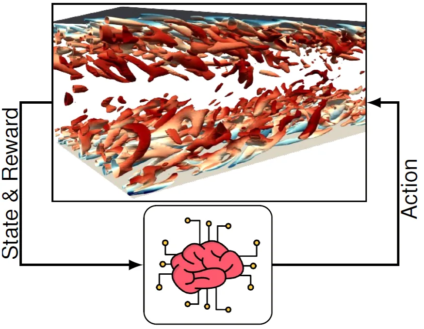
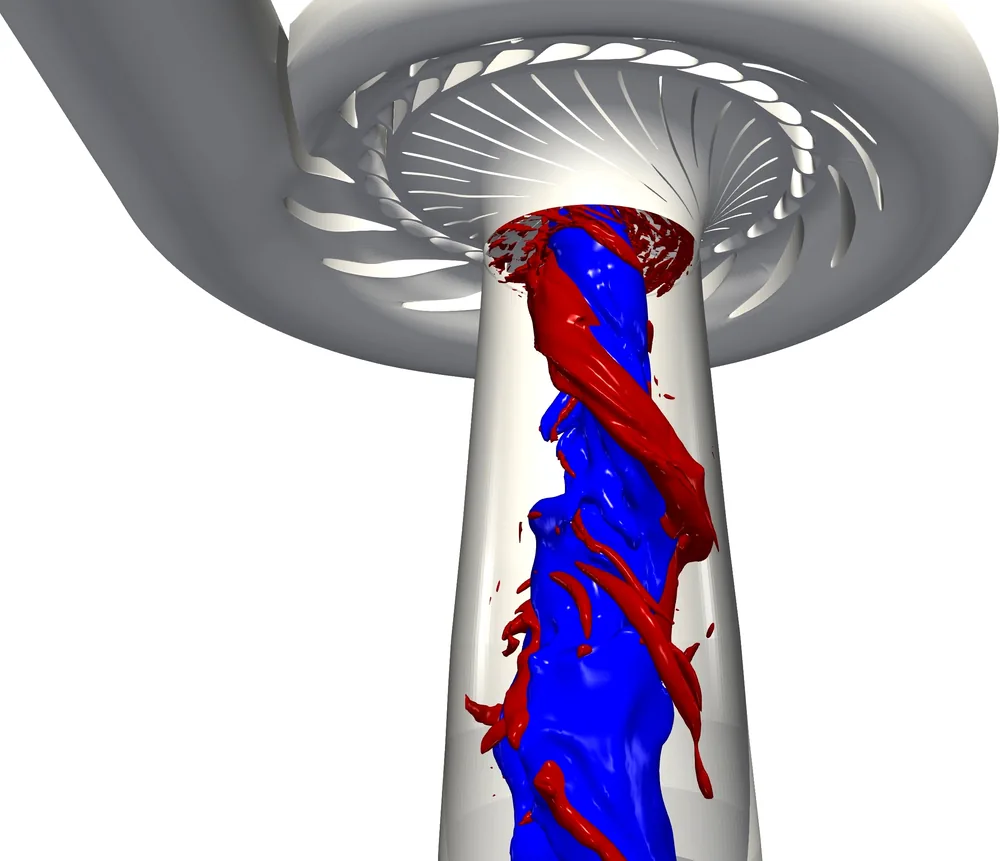
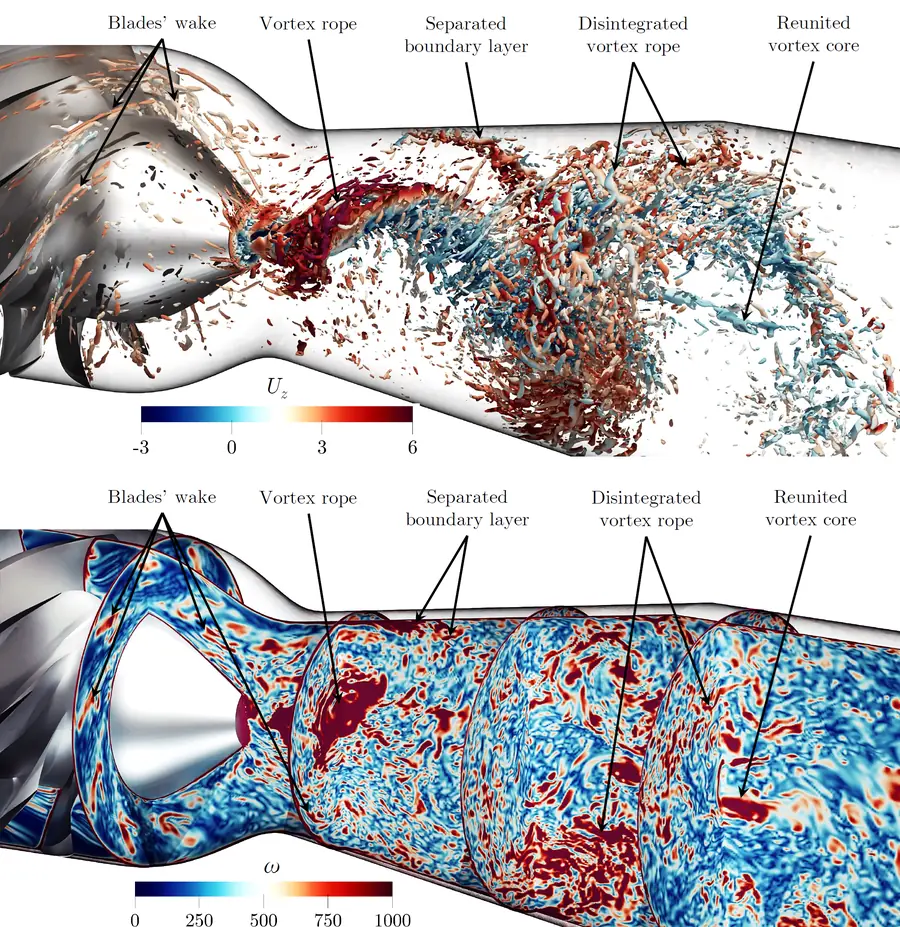
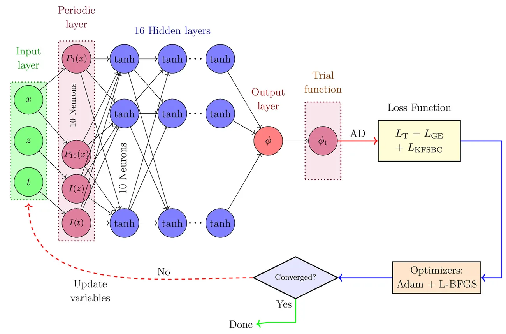
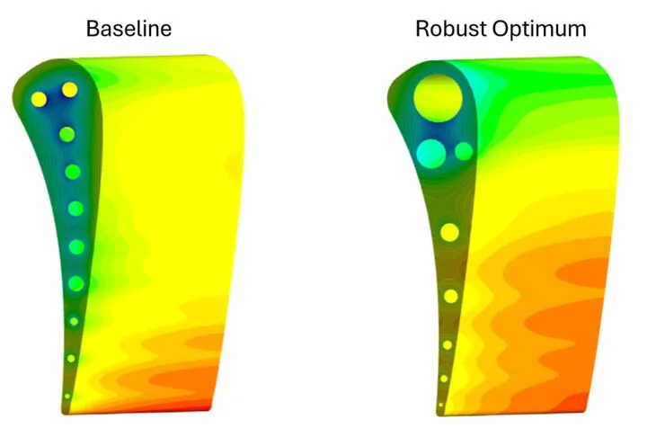
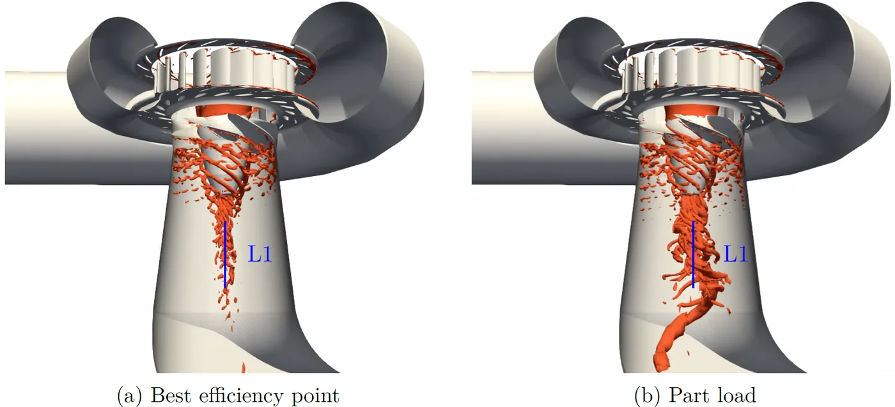

Saeed Salehi
Associate Professor of Fluid Mechanics, Docent
Division of Applied Thermodynamics and Fluid Mechanics · Department of Management and Engineering · Linköping University, Sweden
I study complex fluid flows with high-fidelity computational fluid dynamics (CFD), and combine CFD with data-driven methods and machine learning to build efficient and reliable tools for simulation, model reduction, flow control and uncertainty quantification. Much of my work concerns hydraulic turbines and the flexible operation of hydropower.
I am first and foremost a CFD specialist and an active OpenFOAM developer. My current focus is deep reinforcement learning for active flow control, coupled directly to CFD.
Research themes
All research →
Reinforcement-learning flow control
Deep reinforcement learning coupled with CFD for active control of unsteady and turbulent flows.

Hydraulic turbine transients
Resolved simulation of start-up, shutdown and load changes, with new mesh-motion methods in OpenFOAM.

Modal analysis and reduced-order models
POD, SPOD and DMD to extract coherent structures and dominant frequencies from simulation data.

Physics-informed neural networks
Multi-fidelity PINNs for solving partial differential equations, including free-surface waves.

Uncertainty quantification
Sparse and multi-fidelity polynomial chaos methods and robust design under uncertainty.

Flexible hydropower
Flow-induced loads, turbine lifetime and contra-rotating pump-turbines for energy storage.
News
- Sep 2026The application period for the PhD position in AI-based flow control for hydropower has closed, and assessment and recruitment are under way. We received a large number of applications, so this will take some time. Thank you to all applicants for your patience.
- Jul 2026Talk on closed-loop control of the vortex rope in a swirl generator with deep reinforcement learning, and session chair, at the 21st OpenFOAM Workshop in Guimarães, Portugal.
- Jun 2026New PhD position in AI-based active flow control for hydraulic turbines, funded by the ÅForsk Foundation (see the project page). Application deadline: 31 August 2026.
- May 2026Invited talk, Towards efficient control of turbulence, at the Swedish Society for Industrial Flow and Heat Transfer in Lund.
- Mar 2026Talk on transfer learning for reinforcement-learning-based flow control, and session chair, at the 3rd ERCOFTAC Workshop on Machine Learning for Fluid Dynamics in Amsterdam.
- Feb 2026Awarded the title of Docent in Fluid Mechanics at Linköping University.
- 2026Appointed Section Editor of the OpenFOAM Journal.
- 2026New review papers on PINNs for the lid-driven cavity problem (Results in Engineering) and on lifetime analysis of hydro turbines (Renewable and Sustainable Energy Reviews).
- Oct 2025Preprint: Transfer learning strategies for accelerating reinforcement-learning-based flow control.
- Aug 2025Joined Linköping University as Associate Professor of Fluid Mechanics.
Current project
ÅForsk Early-Career Research Grant
Enabling flexible hydropower operation by AI-based active flow control
Deep reinforcement learning coupled with high-fidelity CFD to suppress harmful flow instabilities in hydraulic turbines at off-design operation. A PhD student is being recruited at Linköping University.
Students
Thesis projects and PhD opportunities
I supervise MSc and BSc theses in CFD, OpenFOAM development and machine learning for fluid flows, and I support applications for external PhD and postdoc fellowships.
Recent publications
All publications →- State-of-the-art implementations of PINNs for the lid-driven cavity problem – a critical review with future perspectivesResults in Engineering, 32, 112399 (2026) DOI
- Lifetime analysis of hydro turbines with focus on fatigue damage in a renewable energy system – A reviewRenewable and Sustainable Energy Reviews, 228, 116578 (2026) DOI
- Physics-informed neural networks with hard and soft boundary conditions for linear free surface wavesPhysics of Fluids, 37(8), 087158 (2025) DOI
- An efficient intrusive deep reinforcement learning framework for OpenFOAMMeccanica, 60(6), 1673–1693 (2025) DOI
- Transfer learning strategies for accelerating reinforcement-learning-based flow controlarXiv preprint arXiv:2510.16016 (2025) arXiv